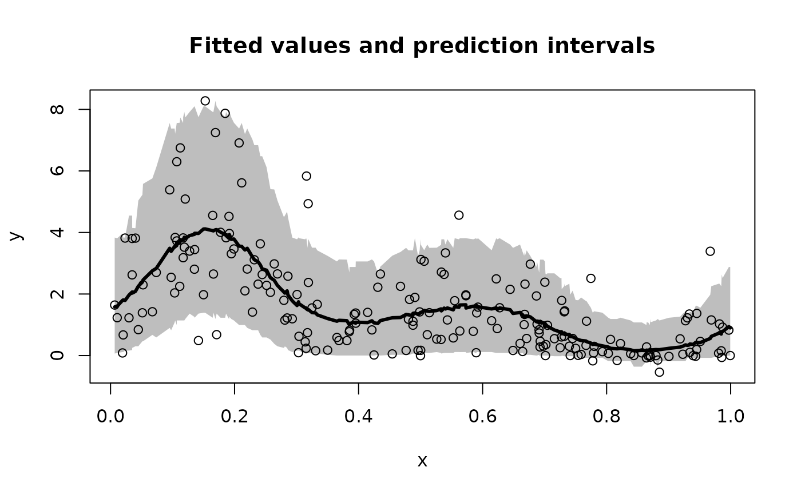
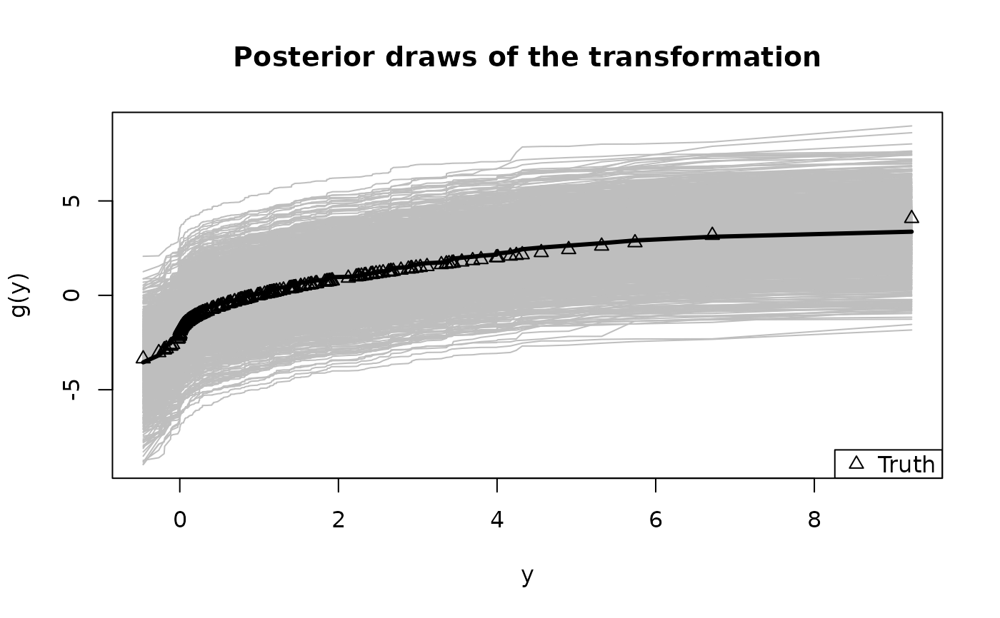

Monte Carlo sampling for Bayesian spline regression with an unknown (nonparametric) transformation. Cubic B-splines are used with a prior that penalizes roughness.
Usage
sbsm(
y,
x = NULL,
x_test = NULL,
psi = NULL,
laplace_approx = TRUE,
fixedX = FALSE,
approx_g = FALSE,
nsave = 1000,
ngrid = 100,
verbose = TRUE
)Arguments
- y
n x 1response vector- x
n x 1vector of observation points; if NULL, assume equally-spaced on [0,1]- x_test
n_test x 1vector of testing points; if NULL, assume equal tox- psi
prior variance (inverse smoothing parameter); if NULL, sample this parameter
- laplace_approx
logical; if TRUE, use a normal approximation to the posterior in the definition of the transformation; otherwise the prior is used
- fixedX
logical; if TRUE, treat the design as fixed (non-random) when sampling the transformation; otherwise treat covariates as random with an unknown distribution
- approx_g
logical; if TRUE, apply large-sample approximation for the transformation
- nsave
number of Monte Carlo simulations
- ngrid
number of grid points for inverse approximations
- verbose
logical; if TRUE, print time remaining
Value
a list with the following elements:
coefficientsthe posterior mean of the regression coefficientsfitted.valuesthe posterior predictive mean at the test pointsx_testpost_theta:nsave x psamples from the posterior distribution of the regression coefficientspost_ypred:nsave x n_testsamples from the posterior predictive distribution atx_testpost_g:nsaveposterior samples of the transformation evaluated at the uniqueyvaluesmodel: the model fit (here,sbsm)
as well as the arguments passed in.
Details
This function provides fully Bayesian inference for a
transformed spline regression model using Monte Carlo (not MCMC) sampling.
The transformation is modeled as unknown and learned jointly
with the regression function (unless approx_g = TRUE, which then uses
a point approximation). This model applies for real-valued data, positive data, and
compactly-supported data (the support is automatically deduced from the observed y values).
The results are typically unchanged whether laplace_approx is TRUE/FALSE;
setting it to TRUE may reduce sensitivity to the prior, while setting it to FALSE
may speed up computations for very large datasets.
Examples
# \donttest{
# Simulate some data:
n = 200 # sample size
x = sort(runif(n)) # observation points
# Transform a noisy, periodic function:
y = g_inv_bc(
sin(2*pi*x) + sin(4*pi*x) + rnorm(n),
lambda = .5) # Signed square-root transformation
# Fit the semiparametric Bayesian spline model:
fit = sbsm(y = y, x = x)
#> [1] "2 seconds remaining"
#> [1] "Total time: 4 seconds"
names(fit) # what is returned
#> [1] "coefficients" "fitted.values" "post_theta" "post_ypred"
#> [5] "post_g" "post_psi" "model" "y"
#> [9] "X" "approx_g"
# Note: this is Monte Carlo sampling...no need for MCMC diagnostics!
# Plot the model predictions (point and interval estimates):
pi_y = t(apply(fit$post_ypred, 2, quantile, c(0.05, .95))) # 90% PI
plot(x, y, type='n', ylim = range(pi_y,y),
xlab = 'x', ylab = 'y', main = paste('Fitted values and prediction intervals'))
polygon(c(x, rev(x)),c(pi_y[,2], rev(pi_y[,1])),col='gray', border=NA)
lines(x, y, type='p') # observed points
lines(x, fitted(fit), lwd = 3) # fitted curve

# Summarize the transformation:
y0 = sort(unique(y)) # posterior draws of g are evaluated at the unique y observations
plot(y0, fit$post_g[1,], type='n', ylim = range(fit$post_g),
xlab = 'y', ylab = 'g(y)', main = "Posterior draws of the transformation")
temp = sapply(1:nrow(fit$post_g), function(s)
lines(y0, fit$post_g[s,], col='gray')) # posterior draws
lines(y0, colMeans(fit$post_g), lwd = 3) # posterior mean
lines(y, g_bc(y, 0.5), type='p', pch=2) # true transformation
legend('bottomright', c('Truth'), pch = 2) # annotate the true transformation

# }